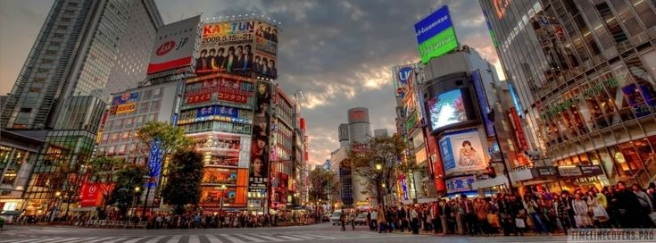

Tokyo
Tóquio, a movimentada capital do Japão, combina o estilo ultramoderno com o tradicional, desde arranha-céus iluminados por neon a templos históricos. O opulento santuário xintoísta Meiji é conhecido por seu altíssimo portão e pelas florestas circundantes. O Palácio Imperial fica localizado em meio a jardins públicos. Os muitos museus da cidade oferecem exposições que variam de arte clássica (no Museu Nacional de Tóquio) a um teatro kabuki reconstruído (no Museu Edo-Tokyo).